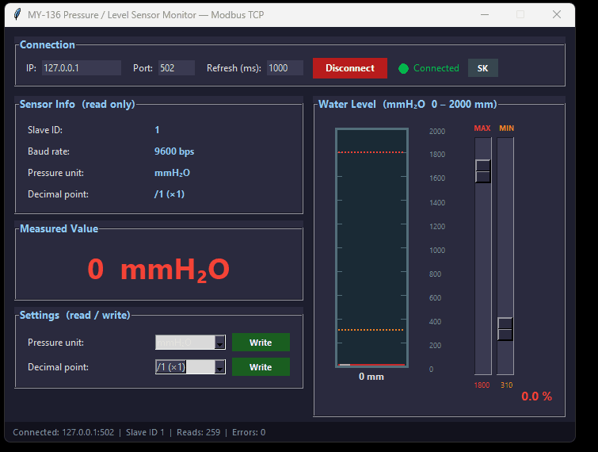

Desktopová aplikácia na monitorovanie snímača tlaku / hladiny MY-136 cez Modbus TCP (RS485 snímač → prevodník RS485-to-Ethernet). Vizualizácia nádrže, MIN/MAX alarmy, história, e-mailové notifikácie.
Python 3 · pymodbus >= 3.6.0 · tkinter · pystray
| Platforma | Arch | Súbor | |
|---|---|---|---|
| Windows | x86-64 | LevelSensorMonitor.exe | ↓ Stiahnuť |
| Linux | x86-64 | LevelSensorMonitor-linux-x64 | ↓ Stiahnuť |
| Linux (Raspberry Pi) | ARM64 | LevelSensorMonitor-linux-arm64 | ↓ Stiahnuť |
| macOS Apple Silicon | ARM64 | LevelSensorMonitor-mac-arm64 | ↓ Stiahnuť |
xattr -d com.apple.quarantine LevelSensorMonitor-mac-*chmod +x LevelSensorMonitor-mac-*./LevelSensorMonitor-mac-*
python level_sensor_monitor.py)192.168.1.1, Port 502, Slave ID 1Pripojiť — nameraná hodnota a nádrž sa začnú obnovovaťpython simulator.py --port 502 a pripojte sa na 127.0.0.1Viac Modbus masterov (napr. SCADA/PLC) na tom istom snímači: prepni prevodník do režimu Modbus gateway / Multi-Host Polling, nie transparentný. V transparentnom režime sa transaction ID zrazia a aplikácia trvalo ukazuje „Chyba“. (USR-DR134: Working Mode → Modbus Multi Host Polling.)
Testovací Modbus TCP server emulujúci snímač MY-136.
| Príkaz | Popis |
|---|---|
| python simulator.py --port 502 | štandardný Modbus port |
| python simulator.py --mode sine | plynulá sínus vlna 0↔2000 mm |
| python simulator.py --speed 2.0 | rýchlejšia animácia |
| Adresa | Popis | FC | Prístup |
|---|---|---|---|
| 0 | Slave ID | FC03 | len čítanie |
| 1 | Baud rate (3 = 9600 bps) | FC03 | len čítanie |
| 2 | Jednotka tlaku — 0=MPa … 8=mmH₂O | FC03 FC06 | čítanie / zápis |
| 3 | Desatinné miesto — 0=/1 · 1=/10 · 2=/100 · 3=/1000 | FC03 FC06 | čítanie / zápis |
| 4 | Nameraná hodnota (raw) — deliť deliteľom reg. 3 | FC03 | len čítanie |
| 5 | Nulový posun (zero offset) | FC03 FC06 | čítanie / zápis |